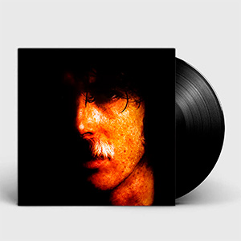
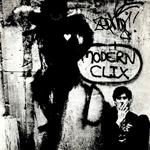
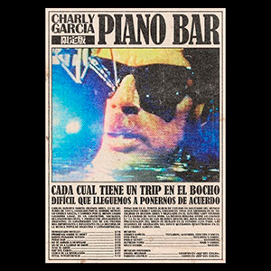
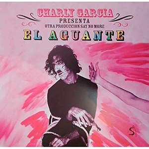

Yendo de la cama al living
Primer album de estudio en solitario grabó el material en agosto de
1982, durante el último año de la última dictadura cívico-militar
argentina (1976 - 1983), y finalizada ya la Guerra de Malvinas (entre
abril y junio de 1982). Se grabó en los Estudios ION y los Estudios
Panda, y las canciones fueron mezcladas en los Estudios ION por
Amílcar Gilabert. En el álbum hay invitados estelares como Luis
Alberto Spinetta, Pedro Aznar (compañero de Charly García en la
superbanda Serú Girán) y León Gieco, quien aparece acreditado en el
álbum con el nombre "Ricardo Gómez", debido a temas de exclusividad
con otra compañía discográfica. En una de las canciones también
participó Nito Mestre, con quien Charly García había conformado el dúo
Sui Generis.
Su disco se compone principalmente de los siguientes géneros:
Pop rock, art pop, pop progresivo y new wave.

- Yendo de la cama al living
- Superheroes
- No bombardeen Buenos Aires
- Vos también estabas verde
- Yo no quiero volverme tan loco
- Canción de dos por tres
- Peluca telefonica
- Inconsciente colectivo
Clics Modernos
El disco fue grabado y mezclado en Nueva York y todos los temas
fueron compuestos por Charly García.
Contiene varias de las canciones más importantes su carrera, como «Nos
siguen pegando abajo», «No soy un extraño», «No me dejan salir», «Los
dinosaurios» (referida a los desaparecidos por la última dictadura
argentina), «Bancate ese defecto», «Plateado sobre plateado» y «Ojos
de video tape».El disco fue finalmente presentado en diciembre de 1983
en varias funciones en el Estadio Luna Park, e incluía temas
«bailables».El álbum fue concebido, grabado y lanzado en los meses
anteriores a que la última dictadura argentina se retirara del poder.
El ritmo bailable de las canciones, el estilo new wave y varias de sus
letras ("Nos siguen pegando abajo", "No me dejan salir", "Plateado
sobre plateado", "Los dinosaurios"), se relacionan con ese momento
histórico para la Argentina, que dejaba atrás décadas de pesadilla y
terrorismo de Estado e intentaba consolidarse en el sistema
democrático, un proceso que sufrió interrupciones violentas al menos
desde 1930.
En términos generales, el álbum obtuvo elogios de los críticos, aunque
al principio varios menospreciaron el impacto, la composición y
alcance tanto del disco como de su intérprete en su carrera como
solista.
Figuró en varias listas de los mejores discos de todos los tiempos
de América Latina, entre las cuales se incluyeron las de las
revistas Al Borde y Rolling Stone.
Se publicaron dos sencillos comerciales para promover el disco,
después de lo cual García realizó la presentación del mismo en el
estadio Luna Park, Buenos Aires en el mismo año del lanzamiento del
trabajo.

- Nos siguen pegando abajo
- No soy un extraño
- Dos cero uno
- Nuevos trapos
- Bancate ese efecto
- No me dejan salir
- Los dinosaurios
- Plateado sobre plateado
- Ojos de video tape
Piano Bar
Piano Bar es el tercer álbum de estudio en solitario del músico
argentino Charly García, editado en 1984. Fue grabado en su totalidad
en Buenos Aires y mezclado en el Electric Lady Studios en la ciudad de
Nueva York. La revista Rolling Stone lo colocó n.º 12 en su lista de
los mejores discos del rock argentino.1 La presentación del disco se
realizó en el Estadio Luna Park.Las sesiones de grabación del disco
quedaron registradas en el DVD Charly García Oro.

- Demoliendo hoteles
- Promesas sobre el bidet
- Raros peinados nuevos
- Piano bar
- No te animas a despegar
- No se va a llamar mi amor
- Tuve tu amor
- Rap del exilio
- erca de la revolución
- Total interferencia
El Aguante
El Aguante es el noveno álbum de estudio en solitario del músico
argentino Charly García, editado en el año 1998. Una de las
curiosidades del disco es Pedro trabaja en el cine que fue un tema de
su etapa en Sui Generis que jamás grabó. Algo similar ocurre con Lo
que ves es lo que hay, un tema de su etapa solista que iba a formar
parte de Cómo conseguir chicas de 1989.Kill my mother es una canción
dedicada a la madre de Charly, Carmen Moreno, con quien García está
peleado hasta el día de hoy. El disco fue grabado en las ciudades de
Madrid y Miami, con invitados como Joaquín Sabina en Tu arma en el
sur. Fue presentado el 26 de diciembre de 1998, en el Estadio Obras
Sanitarias.

- El aguante
- Kill my mother
- Pedro trabaja en el cine
- No estaria mal
- Soldado de lata
- Correte Beethoven
- Tu arma en el sur
- Dos edificios dorados
- Uno a uno
- Lo que ves es lo que hay